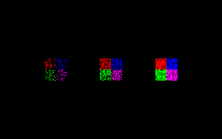

Help Center›FreeBASIC
Customkeyword
Parameter to the Put graphics statement which selects a custom method
Syntax
Put [ target, ] [ STEP ] ( x,y ), source [ ,( x1,y1 )-( x2,y2 ) ], Custom, custom_function_ptr [, parameter]Parameters
| Name | Description | |
|---|---|---|
custom_function_ptr | name of the custom user defined function. | |
parameter | optional Pointer to be passed to the custom function; if omitted, the default value is zero (0). |
Description
Custom selects a custom user defined function as the method for blitting an image buffer.The
Custom method uses a user-defined function to calculate the final pixel values to be drawn to the destination buffer. This function will be called once for every pixel of the source image, and will receive the source and destination pixel values, and a data pointer passed by the Put function. The pixel value returned will be the value used to draw to the destination buffer. The function has the form:Declare Function identifier ( _
identifier is the name of the function.source_pixel is the current pixel value of the source image.destination_pixel is the current pixel value of the destination image.parameter is the parameter that is passed by the Put command. If it was omitted, its value will be zero.Remarks
Dialect Differences
- Not available in the -lang qb dialect.
Differences from QB
- New to FreeBASIC
See also
Example
Function dither ( ByVal source_pixel As ULong, ByVal destination_pixel As ULong, ByVal parameter As Any Ptr ) As ULong
''either returns the source pixel or the destination pixel, depending on the outcome of rnd
Dim threshold As Single = 0.5
If parameter <> 0 Then threshold = *CPtr(Single Ptr, parameter)
If Rnd() < threshold Then
Return source_pixel
Else
Return destination_pixel
End If
End Function
Dim img As Any Ptr, threshold As Single
'' set up a screen
ScreenRes 320, 200, 16, 2
ScreenSet 0, 1
'' create an image
img = ImageCreate(32, 32)
Line img, ( 0, 0)-(15, 15), RGB(255, 0, 0), bf
Line img, (16, 0)-(31, 15), RGB( 0, 0, 255), bf
Line img, ( 0, 16)-(15, 31), RGB( 0, 255, 0), bf
Line img, (16, 16)-(31, 31), RGB(255, 0, 255), bf
'' dither the image with varying thresholds
Do Until Len(Inkey)
Cls
threshold = 0.2
Put ( 80 - 16, 100 - 16), img, Custom, @dither, @threshold
'' default threshold = 0.5
Put (160 - 16, 100 - 16), img, Custom, @dither
threshold = 0.8
Put (240 - 16, 100 - 16), img, Custom, @dither, @threshold
ScreenCopy
Sleep 25
Loop
'' free the image memory
ImageDestroy img

Reference
- Documented in KeyPgCustomgfx.html